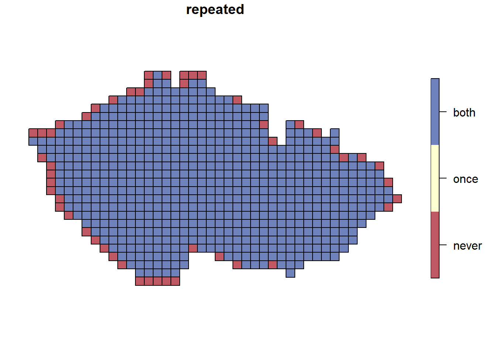
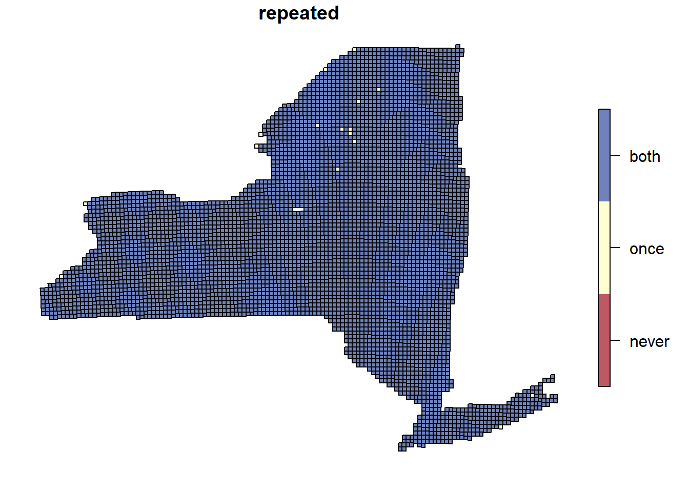
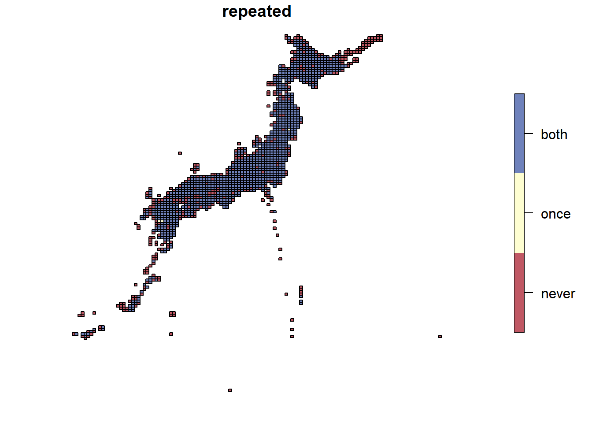
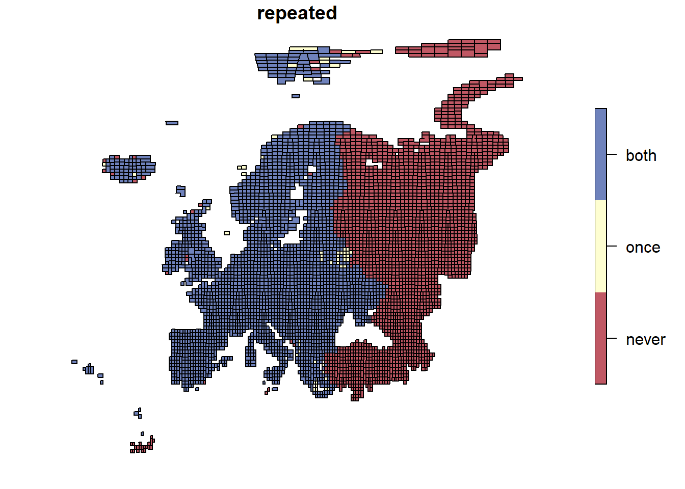

rm(list=ls())
gc()Atlas Data Clean
1 Clean Environment
2 Libraries
# Spatial:
library(sf) Linking to GEOS 3.11.2, GDAL 3.7.2, PROJ 9.3.0; sf_use_s2() is TRUEsf_use_s2(FALSE) # switch spherical geometry offSpherical geometry (s2) switched off# Data handling:
library(rstatix)
Attache Paket: 'rstatix'Das folgende Objekt ist maskiert 'package:stats':
filterlibrary(dplyr)
Attache Paket: 'dplyr'Die folgenden Objekte sind maskiert von 'package:stats':
filter, lagDie folgenden Objekte sind maskiert von 'package:base':
intersect, setdiff, setequal, unionlibrary(tidyr)
# library(plyr)
## plyr is required but produces some issues with dplyr. Thus it will be called in each function individually and is not required to load here.3 Path Variables:
# Folders
source_atlas <- c("c:/Users/wolke/OneDrive - CZU v Praze/Datasets/Processed/Atlases/Replicated/")
source_predictors <- c("c:/Users/wolke/OneDrive - CZU v Praze/Dokumenty/PhD_Projects/StaticPredictors/Data/")
source_Git <- c("c:/Users/wolke/OneDrive - CZU v Praze/Dokumenty/GitHub/BEAST_General_Procedures/Project_Frieda/StaticPredictors/")
# Folder paths to atlas data
source_paths <- c(paste0(source_atlas, "Birds_Atlas_Czechia/"),
paste0(source_atlas, "Birds_Atlas_New_York/"),
paste0(source_atlas, "Birds_atlas_Japan/"),
paste0(source_atlas, "Birds_atlas_EBBA/"))
# Folder path to output folder
out_path <- c(paste0(source_Git, "out/"))
# Paths to data & grids
data_paths <- c(paste0(source_paths[1],"Birds_Atlas_Czechia_beast_data.rds"),
paste0(source_paths[2], "Birds_Atlas_New_York_beast_data.rds"),
paste0(source_paths[3], "Birds_atlas_Japan_beast_data.rds"),
paste0(source_paths[4], "Birds_atlas_EBBA_beast_data_CHANGE.rds"))
grid_paths <- c(paste0(source_paths[1],"Birds_Atlas_Czechia_grid.gpkg"),
paste0(source_paths[2], "Birds_Atlas_New_York_grid.gpkg"),
paste0(source_paths[3], "Birds_atlas_Japan_grid.gpkg"),
paste0(source_paths[4], "Birds_atlas_EBBA_grid.gpkg"))4 Set Variables
# Vectors for loops:
atlas_names <- c("Birds_Atlas_Czechia", "Birds_Atlas_New_York","Birds_atlas_Japan", "Birds_atlas_EBBA")
time_periods <- c(1,2)
# Define the desired order of factor levels
desired_levels <- factor(c("1", "2","4", "8", "16", "32", "64", "128"), ordered = T,
levels = c("1", "2","4", "8", "16", "32", "64", "128")) 5 Data
5.1 Read & Pre-Process
# Species data =====================
presence_data <- list()
for (i in seq_along(data_paths)){
pres_dat <- readRDS(data_paths[i])
sy <- sort(unique(pres_dat$start_year))
pres_dat2 <- pres_dat %>%
ungroup() %>%
# Add time-period column
mutate(tp = case_when(start_year == sy[1] ~ 1,
start_year == sy[2] ~ 2)) %>%
filter(tp %in% c(1,2)) %>%
# Reorder spatial scales from small to large
reorder_levels(cell_grouping, order=desired_levels) %>%
select(dataset, tp, cell_grouping,
cell_label, cell_lat, cell_long, area,
verbatim_name)
presence_data[[i]] <- pres_dat2
}
# Merge list of atlases together
presence_data2 <- plyr::rbind.fill(presence_data, fill=T) %>%
distinct(dataset, tp, verbatim_name, cell_grouping, cell_label, .keep_all = T)5.1.1 Data checks
# ========================== Data checks ======================================= #
colSums(is.na(presence_data2)) dataset tp cell_grouping cell_label cell_lat
0 0 0 0 0
cell_long area verbatim_name
0 0 0 # Summary sp and site numbers: Before reduction
presence_data2 %>%
filter(cell_grouping == 1) %>%
group_by(dataset, tp) %>%
summarise(n_sp = n_distinct(verbatim_name),
n_sites = n_distinct(cell_label))`summarise()` has grouped output by 'dataset'. You can override using the
`.groups` argument.# A tibble: 8 × 4
# Groups: dataset [4]
dataset tp n_sp n_sites
<chr> <dbl> <int> <int>
1 Birds_Atlas_Czechia 1 206 628
2 Birds_Atlas_Czechia 2 213 628
3 Birds_Atlas_New_York 1 242 5323
4 Birds_Atlas_New_York 2 248 5332
5 Birds_atlas_EBBA 1 432 2826
6 Birds_atlas_EBBA 2 446 2868
7 Birds_atlas_Japan 1 221 1095
8 Birds_atlas_Japan 2 227 1098presence_data2 %>%
ungroup() %>%
summarise(n_sp = n_distinct(verbatim_name)) # 989 sp in total (before reduction) n_sp
1 826# ==================== Save output & clean up environment ===================== #
# saveRDS(presence_data2, paste0(out_path, "rds/presence_data_raw.rds"))
rm(pres_dat, sy, pres_dat2)
# ============================================================================= #5.2 Filter 1: Cells sampled twice
- remove cells (from the species data) that were only sampled once (Note: this is not identical to cells that have never been sampled. Those are generally excluded here)
- remove species that were only sampled once in the cells that were sampled twice (because we don’t have change data for them anyway).
## Filter level 1: Cells sampled twice
common_cells <- presence_data2 %>%
ungroup() %>%
distinct(dataset, cell_grouping, cell_label, tp) %>%
group_by(dataset, cell_grouping, cell_label) %>%
# How often each cell was sampled:
mutate(num_periods_cells = n_distinct(tp)) %>%
select(cell_grouping, cell_label, num_periods_cells, dataset) %>%
distinct()
colSums(is.na(common_cells)) cell_grouping cell_label num_periods_cells dataset
0 0 0 0 presence_data_rep <- full_join(presence_data2, common_cells)Joining with `by = join_by(dataset, cell_grouping, cell_label)`excluded_cells <- common_cells %>%
filter(num_periods_cells %in% c(1,0)) %>%
distinct(dataset, cell_grouping, cell_label)5.2.1 Data checks
# ========================== Data checks ======================================= #
common_cells %>%
filter(num_periods_cells == 2 & cell_grouping == 1) %>%
group_by(dataset, cell_grouping) %>%
summarise(n = n_distinct(cell_label))`summarise()` has grouped output by 'dataset'. You can override using the
`.groups` argument.# A tibble: 4 × 3
# Groups: dataset [4]
dataset cell_grouping n
<chr> <fct> <int>
1 Birds_Atlas_Czechia 1 628
2 Birds_Atlas_New_York 1 5320
3 Birds_atlas_EBBA 1 2821
4 Birds_atlas_Japan 1 1095table(excluded_cells$dataset) # EBBA: 66 (1706?), JP: 3, NY = 20
Birds_atlas_EBBA Birds_atlas_Japan Birds_Atlas_New_York
64 3 20 # ============================================================================= #5.3 Filter 2: Species sampled twice in those cells
## Filter level 2: Species sampled twice in the remaining cells
common_sp <- presence_data_rep %>%
filter(num_periods_cells == 2 & cell_grouping == 1) %>%
group_by(dataset, verbatim_name) %>%
summarise(num_periods_sp = n_distinct(tp)) `summarise()` has grouped output by 'dataset'. You can override using the
`.groups` argument.excluded_sp <- common_sp %>%
filter(num_periods_sp == 1) %>%
distinct(dataset, verbatim_name)5.3.1 Data checks
# ========================== Data checks ======================================= #
common_sp %>%
filter(num_periods_sp == 2) %>%
group_by(dataset) %>%
summarise(n = n_distinct(verbatim_name))# A tibble: 4 × 2
dataset n
<chr> <int>
1 Birds_Atlas_Czechia 200
2 Birds_Atlas_New_York 237
3 Birds_atlas_EBBA 432
4 Birds_atlas_Japan 208table(excluded_sp$dataset)
Birds_Atlas_Czechia Birds_atlas_EBBA Birds_atlas_Japan
19 14 32
Birds_Atlas_New_York
16 excluded_sp %>% write.csv("../../Documents/documentation_methods/ExcludedSpecies.csv") # CZ: 19, EBBA = 14 (94?), JP = 32, NY = 16
# ============================================================================= #5.4 Filter Data
presence_data_filt <- full_join(presence_data_rep, common_sp) %>%
filter(num_periods_cells == 2 & num_periods_sp == 2) Joining with `by = join_by(dataset, verbatim_name)`5.4.1 Data checks
# ========================== Data checks ======================================= #
presence_data_filt %>%
filter(cell_grouping == 1) %>%
group_by(dataset, tp) %>%
rstatix::get_summary_stats(type = "robust")# A tibble: 48 × 6
dataset tp variable n median iqr
<chr> <dbl> <fct> <dbl> <dbl> <dbl>
1 Birds_Atlas_Czechia 1 cell_label 65362 351 324
2 Birds_Atlas_Czechia 1 cell_lat 65362 49.8 0.9
3 Birds_Atlas_Czechia 1 cell_long 65362 15.2 2.5
4 Birds_Atlas_Czechia 1 area 65362 134. 2.45
5 Birds_Atlas_Czechia 1 num_periods_cells 65362 2 0
6 Birds_Atlas_Czechia 1 num_periods_sp 65362 2 0
7 Birds_Atlas_Czechia 2 cell_label 68508 353 330
8 Birds_Atlas_Czechia 2 cell_lat 68508 49.8 0.9
9 Birds_Atlas_Czechia 2 cell_long 68508 15.2 2.5
10 Birds_Atlas_Czechia 2 area 68508 134. 2.45
# ℹ 38 more rowspresence_data_filt %>%
filter(cell_grouping == 1) %>%
group_by(dataset, tp) %>%
summarize(
n_sp = n_distinct(verbatim_name),
n_cells = n_distinct(cell_label))`summarise()` has grouped output by 'dataset'. You can override using the
`.groups` argument.# A tibble: 8 × 4
# Groups: dataset [4]
dataset tp n_sp n_cells
<chr> <dbl> <int> <int>
1 Birds_Atlas_Czechia 1 200 628
2 Birds_Atlas_Czechia 2 200 628
3 Birds_Atlas_New_York 1 237 5320
4 Birds_Atlas_New_York 2 237 5320
5 Birds_atlas_EBBA 1 432 2821
6 Birds_atlas_EBBA 2 432 2821
7 Birds_atlas_Japan 1 208 1095
8 Birds_atlas_Japan 2 208 1095presence_data_filt %>% distinct(verbatim_name) %>% nrow() # 841 species [1] 774# ==================== Save output & clean up environment ===================== #
saveRDS(presence_data_filt, "../../out/rds/Presence_data_filtered.rds") ## this is the most up to date name for this file !!
# saveRDS(presence_data_filt, paste0(out_path, "rds/presence_data_reduced.rds"))
rm(common_sp, presence_data_rep, presence_data2, excluded_cells, excluded_sp, presence_data, i )6 Grids
6.1 Read & Pre-Process
- Transform to national CRS with unit = meter
# make list with names of layers so we can read them in below
layers_list <- list()
for (i in seq_along(grid_paths)){
layers <- st_layers(grid_paths[i])$name
layers_list[[i]] <- layers
}Warning in CPL_get_layers(dsn, options, do_count): GDAL Message 1: unable to
open database file: this file is a WAL-enabled database. It cannot be opened
because it is presumably read-only or in a read-only directory. Retrying with
IMMUTABLE=YES open optionnames(layers_list) <- atlas_names
# read grids to list
grid_list <- list()
for (a in seq_along(grid_paths)) {
grids <- sapply(layers_list[[a]], function(i) {
st_read(grid_paths[[a]], paste(i), quiet = TRUE) %>%
reorder_levels( cell_grouping, order=desired_levels)
}, simplify = FALSE)
grid_list[[a]] <- grids
}Warning in CPL_read_ogr(dsn, layer, query, as.character(options), quiet, : GDAL
Message 1: unable to open database file: this file is a WAL-enabled database.
It cannot be opened because it is presumably read-only or in a read-only
directory. Retrying with IMMUTABLE=YES open optionWarning in CPL_read_ogr(dsn, layer, query, as.character(options), quiet, : GDAL
Message 1: unable to open database file: this file is a WAL-enabled database.
It cannot be opened because it is presumably read-only or in a read-only
directory. Retrying with IMMUTABLE=YES open option
Warning in CPL_read_ogr(dsn, layer, query, as.character(options), quiet, : GDAL
Message 1: unable to open database file: this file is a WAL-enabled database.
It cannot be opened because it is presumably read-only or in a read-only
directory. Retrying with IMMUTABLE=YES open option
Warning in CPL_read_ogr(dsn, layer, query, as.character(options), quiet, : GDAL
Message 1: unable to open database file: this file is a WAL-enabled database.
It cannot be opened because it is presumably read-only or in a read-only
directory. Retrying with IMMUTABLE=YES open option
Warning in CPL_read_ogr(dsn, layer, query, as.character(options), quiet, : GDAL
Message 1: unable to open database file: this file is a WAL-enabled database.
It cannot be opened because it is presumably read-only or in a read-only
directory. Retrying with IMMUTABLE=YES open option
Warning in CPL_read_ogr(dsn, layer, query, as.character(options), quiet, : GDAL
Message 1: unable to open database file: this file is a WAL-enabled database.
It cannot be opened because it is presumably read-only or in a read-only
directory. Retrying with IMMUTABLE=YES open option
Warning in CPL_read_ogr(dsn, layer, query, as.character(options), quiet, : GDAL
Message 1: unable to open database file: this file is a WAL-enabled database.
It cannot be opened because it is presumably read-only or in a read-only
directory. Retrying with IMMUTABLE=YES open option
Warning in CPL_read_ogr(dsn, layer, query, as.character(options), quiet, : GDAL
Message 1: unable to open database file: this file is a WAL-enabled database.
It cannot be opened because it is presumably read-only or in a read-only
directory. Retrying with IMMUTABLE=YES open option# clear space
rm(a, i, layers, layers_list, grids)6.1.1 Mapping replicated cells
# pdf(file = "out/figures/CellsSampledMaps.pdf", onefile = T, paper = "a4")
for (a in seq_along(grid_list)){
for (scale in seq_along(length(grid_list[[a]]))){
t_common_cells <- common_cells %>%
filter(dataset == atlas_names[[a]] & cell_grouping == scale) %>%
mutate(num_periods_cells = as.factor(num_periods_cells))
t_grid <- grid_list[[a]][[scale]]
t_grid2 <- full_join(t_grid, t_common_cells) %>%
mutate(repeated = case_when(is.na(num_periods_cells) ~ "never",
num_periods_cells == 1 ~ "once",
num_periods_cells == 0 ~ "never",
num_periods_cells == 2 ~ "both")) %>%
mutate(repeated = as.factor(repeated)) %>%
reorder_levels(repeated, order = c("never", "once", "both"))
plot(t_grid2["repeated"], pal = hcl.colors(3, hcl.pals(type = "divergingx")[13], alpha = 0.7))
#tmap::qtm(t_grid2, "repeated", style = "col_blind", fill = c("black"))
print(t_grid2 %>%
filter(repeated == "both" & cell_grouping == 1) %>%
mutate(Total_area_sampled = sum(area)) %>%
pull(Total_area_sampled) %>% unique() )
}
}Joining with `by = join_by(cell_grouping, cell_label)`[1] 83907.51Joining with `by = join_by(cell_grouping, cell_label)`
[1] 133036.9Joining with `by = join_by(cell_grouping, cell_label)`
[1] 448951Joining with `by = join_by(cell_grouping, cell_label)`

[1] 7467749# dev.off()
rm(t_common_cells, t_grid, t_grid2, common_cells, a, scale)7 Save Objects to RDS
save.image("../../out/RData/1_Atlas_Data_clean.RData")
## We need these:
#atlas_names
#time_periods
#grid_list
#presence_data_filt
#load("1_Atlas_Data_clean.RData")